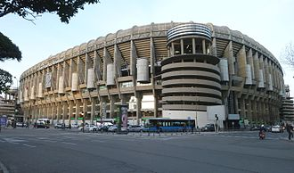

After moving between grounds, the team moved to the Campo de O'Donnell in 1912, which remained its home ground for 11 years. After this period, the club moved for one year to the Campo de Ciudad Lineal, a small ground with a capacity of 8,000 spectators. After that, Real Madrid moved its home matches to Estadio Chamartín, which was inaugurated on 17 May 1923 with a match against Newcastle United. In this stadium, which hosted 22,500 spectators, Real Madrid celebrated its first Spanish league title.
Stadium:Santiago-Bernabéu-story
After some successes, the 1943 elected president Santiago Bernabéu decided that the Estadio Chamartín was not big enough for the ambitions of the club, and thus a new stadium was built and was inaugurated on 14 December 1947. This was the Santiago Bernabéu Stadium as it is known today, although it did not acquire the present name until 1955. The first match at the Bernabéu was played between Real Madrid and the Portuguese club Belenenses and won by Los Blancos, 3–1, the first goal being scored by Sabino Barinaga.
The capacity has changed frequently, peaking at 120,000 after a 1953 expansion. Since then, there have been a number of reductions due to modernizations (the last standing places went away in 1998–99 in response to UEFA regulations which forbids standing at matches in the UEFA competition), countered to some extent by expansions. The latest capacity is 81,044 spectators. A plan to add a retractable roof has been announced. Real Madrid has the fourth-highest of the average attendances of European football clubs, behind only Borussia Dortmund, Barcelona and Manchester United.
The Bernabéu has hosted the 1964 UEFA European Championship final, the 1982 FIFA World Cup final, the 1957, 1969 and 1980 European Cup finals and the 2010 UEFA Champions League Final. The stadium has its own Madrid Metro station along the 10 line called Santiago Bernabéu. On 14 November 2007, the Bernabéu has been upgraded to Elite Football Stadium status by UEFA.
On 9 May 2006, the Alfredo Di Stéfano Stadium was inaugurated in the City of Madrid, where Real Madrid usually trains. The inaugural match was played between Real Madrid and Stade de Reims, a rematch of the 1956 European Cup final. Real Madrid won the match 6–1 with goals from Sergio Ramos, Antonio Cassano (2), Roberto Soldado (2) and José Manuel Jurado. The venue is now part of the Ciudad Real Madrid, the club's new training facilities located outside Madrid in Valdebebas. The stadium holds 5,000 people and is Real Madrid Castilla's home ground. It is named after former Real legend Alfredo Di Stéfano.
{kind=link}